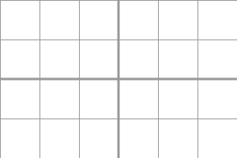

wisualia.patterns module¶
Patterns
A pattern is a paint that is used for drawing. Patterns can be used to fill shapes or to draw lines.
-
class
wisualia.patterns.Pattern(cairo_pattern)[source]¶ Bases:
objectA base class of all patterns.
Parameters: cairo_pattern – an internal cairo_pattern Users should not use it.
-
class
wisualia.patterns.RGBA(r, g, b, a=1)[source]¶ Bases:
wisualia.patterns.PatternParameters: Solid color Pattern.
All arguments are in range 0 to 1. Values that are outside of that range will be clamped when drawn.
-
wisualia.patterns.HSVA(h, s=1, v=1, a=1)[source]¶ Parameters: Return type: Returns: Color with all values in range 0 to 1
Convenience function that creates RGBA Pattern.
All hue values that are outside of range 0 to 1 are divided by 1 and the reminder is used as the hue. This means that hue values 1.3, 7.3, and -2.3 all produce the same color. All other parameters that are outside of that range will be clamped.
import wisualia from wisualia.shapes import circle circle((1,1), 0.5)
-
wisualia.patterns.LinearGradient(start, end, color_stops)[source]¶ Parameters: Creates linear gradient along a straight line. Selgitus saa oled.
Return type: Pattern